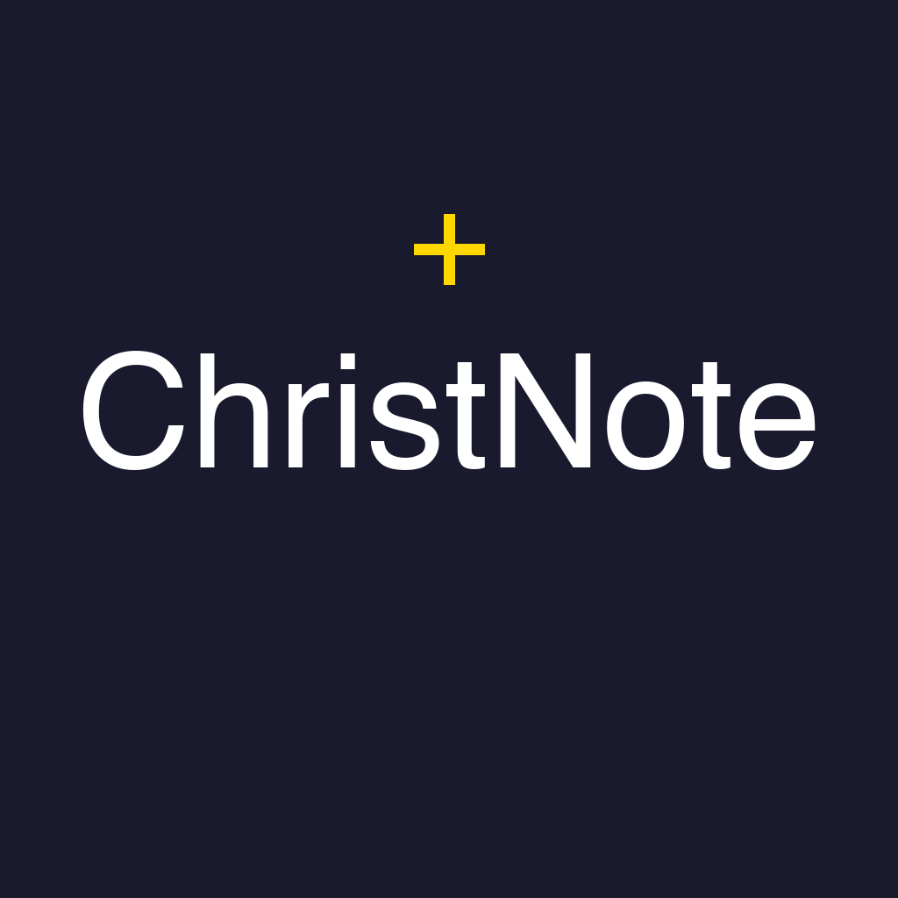

Get in Touch
Have questions or need assistance? We're here to help!
We typically respond within 24-48 hours

Your Bible study companion - We're here to help you grow in faith through better note-taking
Have questions or need assistance? We're here to help!
We typically respond within 24-48 hours
ChristNote is a Bible study and Christian note-taking app designed specifically for believers who want to deepen their faith through organized, private note-taking. Whether you're taking sermon notes, journaling your devotions, studying Scripture, or reflecting on your spiritual journey, ChristNote provides powerful tools while keeping your personal reflections completely private and secure.
Built with privacy-first principles, all your Bible study notes, prayer journals, sermon notes, and spiritual reflections are stored locally on your device. No cloud sync means your personal faith journey remains completely private and secure.
Take detailed notes during sermons, Bible studies, and personal devotions. Organize your thoughts on Scripture passages, sermon points, and spiritual insights.
Format your notes with headers, lists, highlights, and more. Perfect for organizing sermon outlines, Bible study notes, and prayer journal entries.
Keep a private prayer journal with voice notes, reminders for prayer requests, and organized entries. Your prayers stay completely private on your device.
Set reminders for daily devotions, prayer times, or to review specific notes. Notifications deep-link directly to your notes.
Record sermon audio, prayer requests, or quick thoughts. Perfect for capturing insights during church services or personal reflection time.
Attach sermon PDFs, Bible study handouts, or images to your notes. Keep all your study materials organized in one place.
All your Bible study notes, prayer journals, and spiritual reflections are stored locally on your device. No cloud sync means your faith journey stays completely private.
Export your notes with optional encryption. Share sermon notes with your small group or create PDFs of your Bible study insights.
Use tags, projects, and templates to organize notes by book of the Bible, sermon series, prayer topics, or any system that works for you.
Optional AI help for summarizing sermon notes, improving your writing, or translating content. Your data never leaves your device.
If you encounter any bugs or issues with the app, please contact us at dmytro.nekrasov@icloud.com and include:
The more details you provide, the faster we can help resolve your issue!
We value your feedback! If you have ideas for new features or improvements, please send them to dmytro.nekrasov@icloud.com. We review all suggestions and consider them for future updates.
Your feedback helps us make ChristNote better for everyone!
New to ChristNote? Here are some quick tips to get started with your Bible study and Christian note-taking: